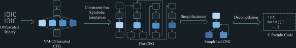

2027Accepted
Pushan: Trace-Free Deobfuscation of Virtualization-Obfuscated Binaries
NDSS 2027 · Accepted for publication
I’m a Computer Science Ph.D. student at Arizona State University, advised by Dr. Ruoyu Wang. My research focuses on program analysis, software security, and artificial intelligence.
My research interests lie at the intersection of program analysis, software security, and artificial intelligence. I am particularly interested in developing scalable and reliable program analysis techniques for adversarial software, with an emphasis on binary analysis, reverse engineering, and automated deobfuscation. I am also interested in leveraging large language models and formal methods to improve the capabilities, correctness, and scalability of program analysis tools.
I’ve also contributed to angr, an open-source binary analysis framework.
During my internship at Microsoft Research, I explored how large language models can improve the capabilities and reliability of binary program analysis tools.
Arizona State University
Arizona State University
IIIT Hyderabad

NDSS 2027 · Accepted for publication
SEFCOM · Arizona State University
Advised by Dr. Ruoyu Wang.
Microsoft Research
Researched how large language models and formal methods can improve the capabilities and reliability of binary program analysis tools.
Black Baza Coffee Company
Created ODK surveys to help farmers monitor coffee farm health using bioindicators. Worked directly with farmers to understand language, smartphone, and survey usability challenges as part of a community-based self-monitoring project.
Read about my experienceComputer Vision Center · Barcelona, Spain
Explored image-based retrieval of food products with similar nutritional value, using a Siamese convolutional neural network to learn product embeddings.
Mentored a high school student on reverse engineering VMProtect and Tigress.
Read the student’s write-upCSE 545: Software Security (Fall 2021)
CSE 365: Introduction to Software Security (Fall 2020)
Digital Signals Applications and Analysis
My education, research, work experience, publications, and teaching.